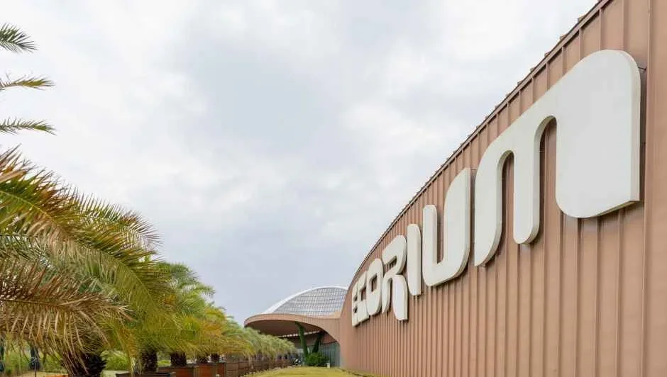
▲ 에코리움 외벽의 'ECORIUM' 글자. 촬영 시기는 자료에 없다 ⓒ 한국관광공사 · 공공누리 제1유형
"국립생태원은 월요일만 쉰다던데, 평일에 가면 되는 거 아닌가?" 2026년 10월 24일 기준으로 국립생태원 공식 누리집(nie.re.kr)의 관람 안내와 2026년 휴관일 공지를 확인했더니, 올해 휴관일 54일 중 8일은 월요일이 아니었다. 월요일이 공휴일·대체공휴일이면 다음 첫 평일이 쉬는 규정에 더해, 설·추석 연휴 등 공휴일에도 문을 닫는 날이 있기 때문이다. 국립생태원 관람안내 바로가기
이 글은 휴관일 전체 표, 09:30~17:30 운영과 매표 마감, 입장료·할인 조건, 에코리움 5개 기후관의 면적·환경, 야외 구역 동선, 겨울에 가는 교통·주차 정보를 공식 자료 기준으로 정리했다. 서천 신성리 갈대밭과 묶는 코스는 신성리 갈대밭 기사에 있어, 여기서는 국립생태원 자체에 집중한다.
💡 먼저 결론
관람시간은 09:30~17:30이고 매표는 종료 1시간 전(16:30)에 마감한다. 휴관은 매주 월요일이며, 월요일이 공휴일이면 첫 번째 평일이 쉰다. 2026년 휴관은 54일이고 그중 8일이 월요일이 아니다(공휴일 다음 평일 4일, 설·추석 연휴 3일, 사유 미표기 1일). 만 65세 이상은 증명서를 지참하면 입장료가 무료다. 입장료는 어른 5,000원·청소년 3,000원·어린이 2,000원이고, 서천군민과 다자녀 가정은 50%, 그린카드 소지자 등은 30% 할인된다.
1. 2026년 휴관 54일 — 월요일 아닌 8일은 언제인가
휴관은 매주 월요일이고, 월요일이 공휴일이면 첫 번째 평일이 휴관일이다. 공식 누리집에는 2026년 휴관일 공지(2026-01-01 게시)가 있으며, 날짜는 달력 이미지로 올라와 있다. 아래 표는 그 달력을 월별로 옮기고, 월요일이 아닌 날만 굵게 요일을 붙인 것이다(요일 판정은 카프리즘 계산). 달력 이미지의 표시일과 54일 합계가 일치함을 2026년 10월 24일에 다시 확인했다.
| 월 | 휴관일 | 일수 |
|---|---|---|
| 1월 | 5, 12, 19, 26 | 4일 |
| 2월 | 2, 9, 16, 17(화), 23 | 5일 |
| 3월 | 3(화), 9, 16, 23, 30 | 5일 |
| 4월 | 6, 13, 20, 27 | 4일 |
| 5월 | 6(수), 11, 18, 26(화) | 4일 |
| 6월 | 1, 8, 15, 22, 29 | 5일 |
| 7월 | 6, 13, 20, 27 | 4일 |
| 8월 | 3, 10, 18(화), 24 | 4일 |
| 9월 | 7, 14, 21, 24(목), 25(금), 28 | 6일 |
| 10월 | 6(화), 12, 19, 26 | 4일 |
| 11월 | 2, 9, 16, 23, 30 | 5일 |
| 12월 | 7, 14, 21, 28 | 4일 |
| 합계 | 월요일이 아닌 날: 2/17(화), 3/3(화), 5/6(수), 5/26(화), 8/18(화), 9/24(목), 9/25(금), 10/6(화) | 54일 |
8일의 내역은 이렇다. 3/1·5/24·8/15·10/3이 주말과 겹쳐 3/2·5/25·8/17·10/5 월요일이 대체공휴일이 되면서 다음 날인 3/3(화)·5/26(화)·8/18(화)·10/6(화)가 휴관일이 됐다(대체공휴일 날짜는 카프리즘 계산). 2/17(화)은 설날, 9/24(목)·9/25(금)은 추석 연휴에 해당해 휴관하며, 그래서 9월은 한 달에 6일이나 쉰다. 5/6(수)은 공식 달력에 표시돼 있으나 사유는 적혀 있지 않다.
올해 남은 휴관일은 10월 26일, 11월 2·9·16·23·30일, 12월 7·14·21·28일이다. 공지는 연초에 게시된 달력 이미지라 연중 변경 가능성을 배제하지 못하므로, 방문 직전에 공식 누리집이나 안내데스크(041-950-5902, 5911)로 한 번 더 확인하자.
▲ 국립생태원 이름 조형물이 놓인 광장. 촬영 시기는 자료에 없다. ⓒ 한국관광공사 · 공공누리 제1유형
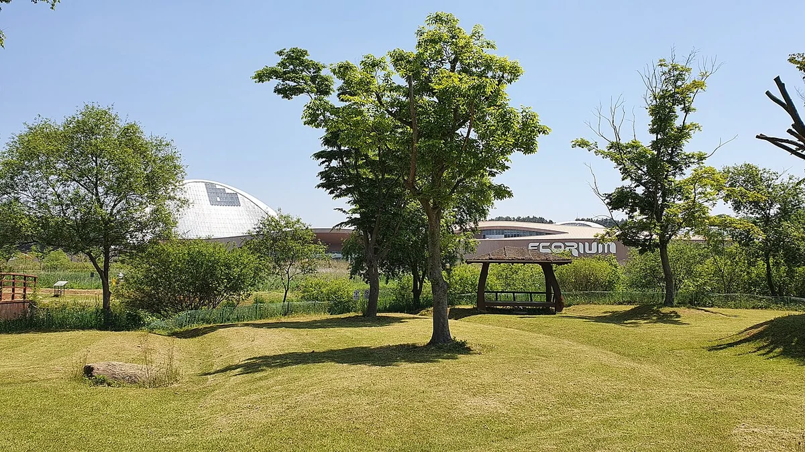
▲ 잔디밭 너머로 보이는 에코리움. 2021년 5월 촬영 ⓒ Uconhe · Wikimedia Commons · CC BY-SA 3.0
2. 09:30~17:30인데 입장은 몇 시까지 되나
공식 안내는 09:30~17:30이고, 매표는 관람 종료 1시간 전에 마감한다. 17:30 종료를 기준으로 하면 매표 마감은 16:30이어서(카프리즘 계산) 에코리움을 천천히 보려는 날에는 오후 3시 이전 도착이 안전하다. 동물보호시설(에코케어센터, CITES동물 보호시설)은 10:00~17:00로 별도다.
| 구분 | 시간 | 비고 |
|---|---|---|
| 일반 관람 | 09:30~17:30 | 휴관 매주 월요일(공휴일이면 첫 평일) |
| 매표 마감 | 관람 종료 1시간 전 | 17:30 기준 16:30(카프리즘 계산) |
| 동물보호시설 | 10:00~17:00 | 에코케어센터·CITES동물 보호시설 |
| 계절별 시간 변경 | 공식 페이지에 표기 없음 | 공식 확인하지 못함, 방문 전 전화 확인 |
일부 보도에는 계절에 따라 시간이 달라 11~2월에는 더 일찍 닫는다는 설명이 있지만, 공식 관람안내 페이지에는 계절별 구분이 없어 이 글에서는 공식 표기만 따랐다. 겨울에 방문한다면 전화로 종료 시각을 확인하는 편이 안전하다. 관람시간·이용요금 바로가기
3. 어른 5,000원, 누가 얼마에 들어가나 — 요금·할인 표
기본 입장료는 어른(만 19~64세) 5,000원, 청소년(만 13~18세) 3,000원, 어린이(만 5~12세) 2,000원이고, 만 4세 이하는 증명서를 지참하면 무료다. 20인 이상 단체는 어른 4,000원·청소년 2,000원·어린이 1,000원이다. 미디리움과 4D영상관은 1인 1,000원이며 할인이 적용되지 않는다고 안내돼 있다.
| 구분 | 개인 | 단체(20인 이상) |
|---|---|---|
| 어른(만 19~64세) | 5,000원 | 4,000원 |
| 청소년(만 13~18세) | 3,000원 | 2,000원 |
| 어린이(만 5~12세) | 2,000원 | 1,000원 |
| 유아(만 4세 이하) | 무료(증명서 지참) | |
| 경로우대자(만 65세 이상) | 무료(증명서 지참) | |
| 미디리움·4D영상관 | 1인 1,000원(할인 미적용) | |
단체 할인은 어른 기준 1,000원, 20명이면 2만 원을 아끼는 정도라(카프리즘 계산) 개인 할인 조건이 있는지부터 따져 보는 편이 낫다. 공식 안내의 할인 대상은 아래와 같고, 증빙이 필요한 항목은 카드나 이수증을 지참해야 한다.
| 구분 | 대상 | 어른 5,000원 기준 |
|---|---|---|
| 50% 할인 | 서천군민(본인), 다자녀 가정(다자녀 우대카드 소지 또는 막내가 만 18세 이하인 3자녀 이상) | 2,500원 |
| 30% 할인 | 그린카드 소지자(본인), 국립해양생물자원관·군산근대역사박물관 입장권 소지자, 학부모On누리 국립생태원 교육영상 이수자(이수증 제시) | 3,500원 |
| 정액 1,000원 할인 | 국세청 세금포인트 모바일쿠폰(1P 사용) | 4,000원 |
| 무료 | 만 65세 이상(증명서 지참), 기초생활수급자, 장애인(1~3급은 동반 1인 포함, 4급 이상은 본인만). 국가보훈등록증 소지자(혜택 범위), 의상자와 배우자·자녀, 의사자 유족. 유료입장객 단체 20인당 인솔자 1인 | 0원 |
같은 1,000원 정액 할인이라도 어른 요금에서는 20%, 어린이 요금(2,000원)에서는 50%에 해당해 비중이 크게 달라진다(카프리즘 계산). 이웃 시설인 국립해양생물자원관이나 군산근대역사박물관 입장권이 있으면 30%가 적용된다는 점은 서천·군산을 묶어 도는 여행자에게 쓸모 있다. 만 65세 이상은 공식 요금표에서 유아와 같은 무료 구간이어서, 신분을 확인할 증명서를 챙기면 된다. 기초생활수급자도 연령 구분 없이 무료로 안내돼 있다.
연간회원 연회비는 어른 20,000원, 청소년 12,000원, 어린이 8,000원, 단체회원(20명 이상) 500,000원(1구좌)이다. 어른 연회비 20,000원은 입장료 5,000원의 4배라서 한 해에 다섯 번 이상 가면 입장료 합계가 더 많아진다(카프리즘 계산). 공식 안내의 연회원 혜택은 전시구역 입장료 면제, 미디리움·4D영상관 각 1일 1회 무료, 재가입 시 연회비 10% 할인, 카페·식당 등 편의시설 10% 할인이고, 서천군민·다자녀 카드 소지자는 연회비 50%, 그린카드 소지자는 30% 할인된다. 가입은 연간회원 신청 홈페이지에서 QR코드를 받은 뒤 정문·서문매표소에서 회비를 내야 완료된다. 공식 안내에는 이용요금이 카드 결제만 가능하다는 문구가 있다.
4. 에코리움 5개 기후관 — 가장 큰 곳은 어디고 얼마나 추운가
가장 넓은 곳은 열대관(3,232㎡, 최고 높이 35m)이고, 실내 온도가 가장 낮게 관리되는 곳은 환경이 10℃ 이하로 표기된 극지관이다(열대관은 겨울 22℃ 이상으로 표기). 에코리움은 열대관·사막관·지중해관·온대관·극지관 5대 기후관과 상설주제전시관 1·2, 4D입체영상관, 어린이 생태글방으로 구성된다. 면적과 환경은 각 기후관의 공식 소개 페이지에서 옮겼다.
| 기후관 | 면적·높이 | 공식 표기 환경 | 공식 소개의 주요 볼거리 |
|---|---|---|---|
| 열대관(1층) | 3,232㎡ / 최고 35m | 여름 35℃ 이하, 겨울 22℃ 이상, 습도 60~90% | 아시아(칼리만탄)·아프리카(마다가스카르)·중남미(아마존) 열대우림, 파노라마 수조 |
| 온대관(1층) | 1,717㎡ / 최고 12m | 겨울 0℃ 이상, 습도 50~60% | 제주 곶자왈 재현, 설악산 계곡 재현 야외 구역, 수달·검독수리 |
| 사막관(2층) | 1,380㎡ / 최고 12m | 여름 35℃ 이하, 습도 10~70% | 사막여우, 검은꼬리프레리독, 식물 300여 종(대부분 CITES 멸종위기종) |
| 극지관(1층) | 1,316㎡ | 10℃ 이하, 습도 50~60% | 개마고원·타이가·툰드라·북극·남극, 펭귄 2종 |
| 지중해관(1층) | 1,287㎡ / 최고 15m | 겨울 10℃ 이상, 습도 40~60% | 올리브·유칼립투스·식충식물, 지중해 양서류(불도롱뇽 등) |
열대관은 소개 문장에 "약 3,000㎡"로, 면적 항목에는 3,232㎡로 적혀 있어 반올림 차이로 보인다. 열대관은 겨울 22℃ 이상, 습도 60~90%로 표기돼 있어 극지관과 한 건물 안에서도 온도 차가 크다. 사막관과 지중해관은 소개란과 특징란의 겨울 온도·습도 표기가 서로 달라(예: 겨울 8~16℃ 표기) 정확한 실내 온도는 공식 확인이 필요하다. 다만 극지관이 10℃ 이하라는 표기는 분명하니 겨울에는 겉옷을 벗기 쉬운 옷차림이 편하다.
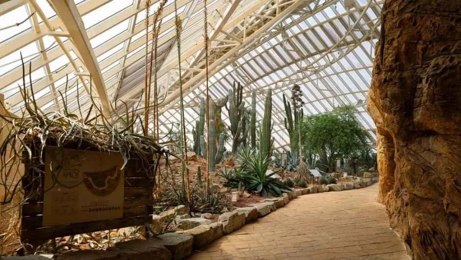
▲ 선인장과 바위로 꾸민 건조 식물 전시 구간. 사진 설명에 관 이름은 없다. 촬영 시기는 자료에 없다. ⓒ 한국관광공사 · 공공누리 제1유형
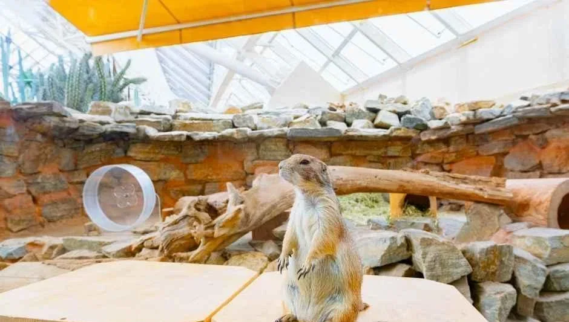
▲ 전시장에 서 있는 프레리독. 사막관 소개에 검은꼬리프레리독이 관람 포인트로 적혀 있다. ⓒ 한국관광공사 · 공공누리 제1유형
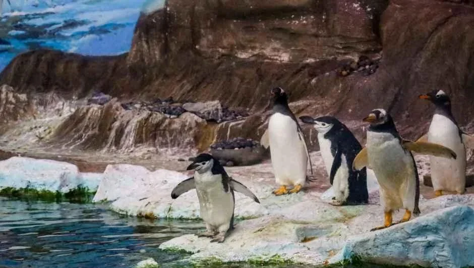
▲ 펭귄 전시 공간. 극지관 소개에 펭귄 2종 전시가 적혀 있다. ⓒ 한국관광공사 · 공공누리 제1유형
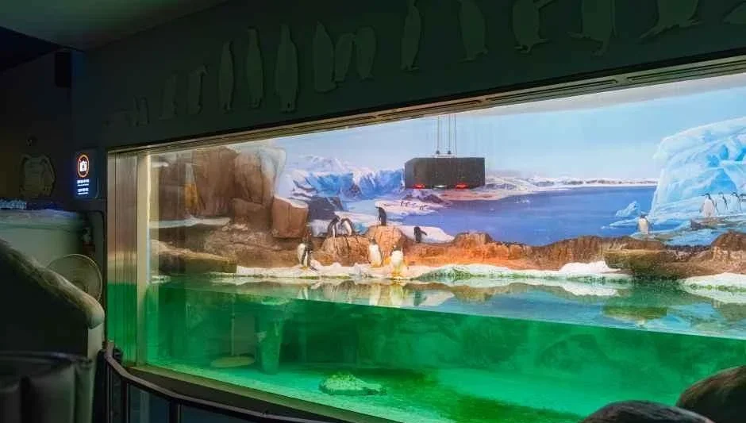
▲ 빙하 그림을 배경으로 한 수조 전시창. 사진 설명에 전시관 이름은 없다. ⓒ 한국관광공사 · 공공누리 제1유형
그 밖의 전시도 있다. 4D입체영상관은 토종 동물 보호, 연어의 일생, 습지로 돌아가는 남생이 이야기를 애니메이션으로 보여 주고, 어린이 생태글방에는 영유아부터 청소년까지를 위한 생태 도서 약 1만 2천 권이 있다고 한국관광공사가 소개한다. 온대관 관람 코스는 10곳(한국 양서류, 제주 아열대 숲, 담수어, 파충류, 수달 서식지, 야외 계곡, 맹금류, 에코케어센터, 긴팔원숭이 섬 등)으로 안내되고, 야외 계곡 구간이 포함돼 겨울 날씨의 영향을 받을 수 있다.
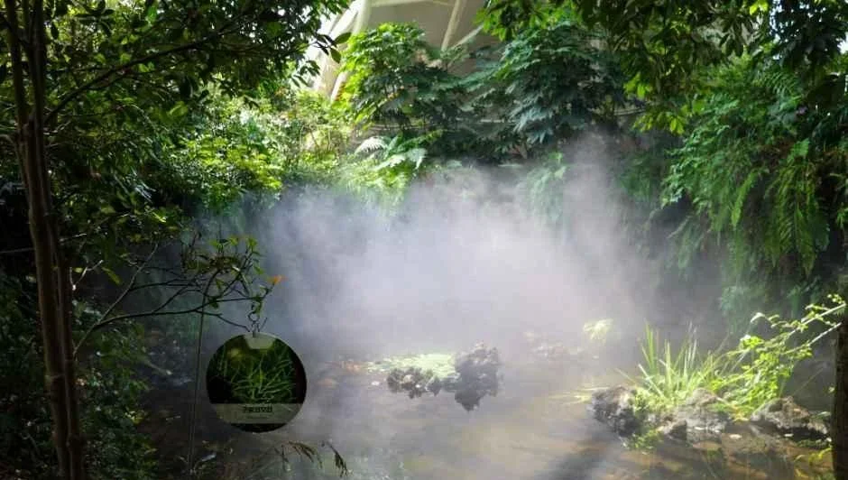
▲ 안개가 피어오르는 온실 숲 연못. 사진 설명에 관 이름은 없다. ⓒ 한국관광공사 · 공공누리 제1유형
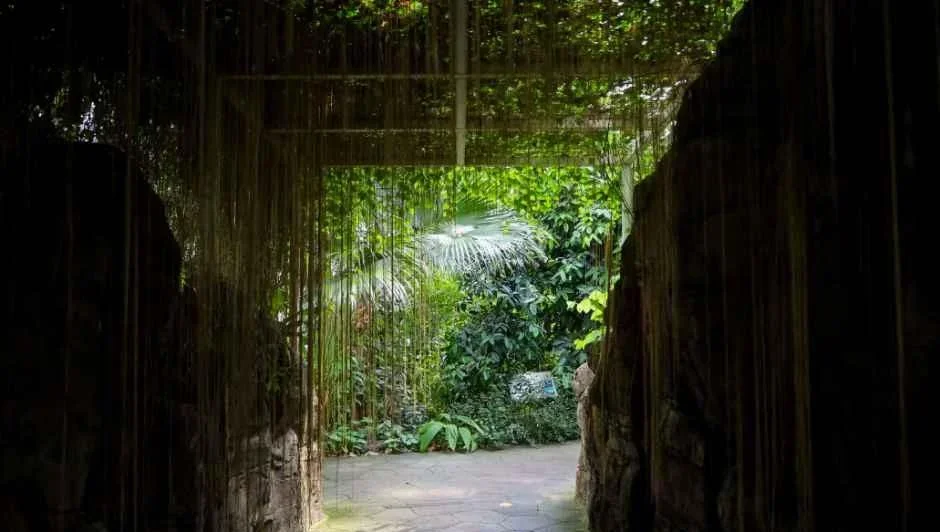
▲ 바위 틈 통로 너머 식물이 우거진 전시 구간. 사진 설명에 관 이름은 없다. ⓒ 한국관광공사 · 공공누리 제1유형
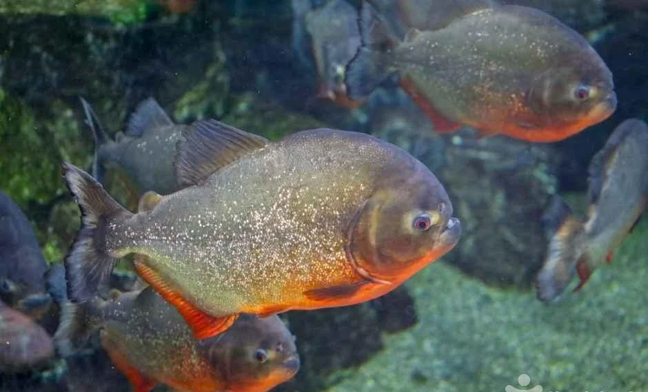
▲ 수조에서 헤엄치는 붉은 배 물고기 무리. 시설명과 촬영 시기는 자료에 없다. ⓒ 한국관광공사 · 공공누리 제1유형
5. 야외 전시와 동선 — 걷는 거리·시간은 이만큼 확인된다
공식 자료로 확인되는 걷는 거리는 서문매표소→에코리움 355m(약 5분), 정문매표소→방문자센터(미디리움) 400m(약 6분), 제인구달길 약 1km(약 15분)다. 전체 관람 소요시간은 공식 자료에 없어 적지 않는다. 야외전시구역과 생태학자의 길은 공식 메뉴로 안내되지만 구역별 걷는 시간은 대부분 표기되지 않았다.
| 구간·시설 | 거리·시간 | 비고 |
|---|---|---|
| 서문매표소 → 에코리움 | 355m, 약 5분 | 오시는 길 안내도 표기 |
| 정문매표소 → 방문자센터(미디리움) | 400m, 약 6분 | 오시는 길 안내도 표기 |
| 제인구달길(생태학자의 길) | 약 1km, 약 15분 | 숲길, 침팬지 둥지·흰개미굴 재현물. 다른 길의 상세는 확인하지 못함 |
| 야외전시 금구리구역 | 8개 구성(아래 표) | 구역 전체 걷는 시간 확인하지 못함 |
| 에코리움 전체·1일 관람 시간 | 확인하지 못함 | 공식 소요시간 표기 없음 |
정문과 서문 중 어디로 들어가느냐에 따라 먼저 만나는 시설이 달라진다. 서문 쪽은 장항선 장항역에서 도보 5분 이내이고, 정문 쪽에는 방문자센터(미디리움)가 있다는 점이 안내도에서 확인된다.
야외전시 금구리구역은 아래 구성으로 소개된다. 공식 표에서 용화실못과 습지체험장의 면적이 같은 68,199㎡로 적혀 있어 표기 오류일 수 있으므로 습지체험장 면적은 옮기지 않았다.
| 구성 | 면적 | 공식 설명 요약 |
|---|---|---|
| 용화실못 | 68,199㎡ | 생태원에서 가장 큰 못, 새와 식물의 서식처 |
| 습지생태원 | 36,820㎡ | 우리나라 대표 습지 생태계 관찰 |
| 습지체험장 | 면적 표기 의심 | 습지 동식물을 직접 만져 보는 체험 공간 |
| 수생식물원 | 42,000㎡ | 수심에 따른 수생식물을 생활형별로 관찰 |
| 금구리못 | 4,630㎡ | 전형적인 연못 생태계 재현 |
| 농업생태정원 | 5,110㎡ | 서천 환경 기반의 벼·모시 등 밭작물과 과수 |
| 용화실쉼터·잔디마당 | 표기 없음 | 설명 없음 |
야외 구역은 못과 습지 위주라 겨울에는 에코리움 실내보다 볼거리가 줄 수 있다. 계절별 개화·철새 관찰 정보는 공식 페이지에 없다. 다만 용화실못 소개에 큰고니·원앙·청둥오리·흰뺨검둥오리 등이 서식 조류로 올라 있으나, 겨울에 실제로 보이는지는 확인하지 못했다. 서천군의 1월 평균기온은 -2℃로 안내돼 있어 야외 구역은 방한 차림이 필요하다.
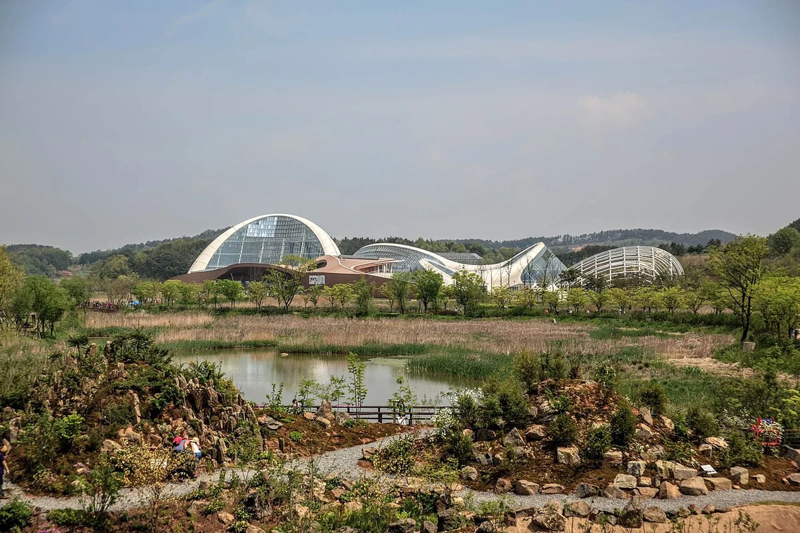
▲ 야외 습지와 못 너머로 보이는 에코리움. 2015년 5월 촬영으로 계절은 봄이다. ⓒ Bongsun · Wikimedia Commons · CC BY-SA 4.0
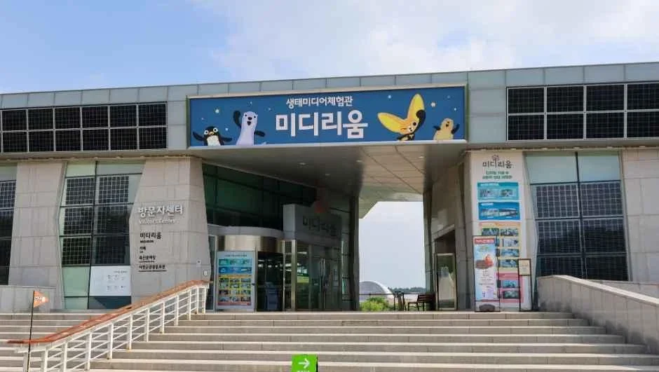
▲ 미디리움 간판이 걸린 방문자센터 건물. 촬영 시기는 자료에 없다. ⓒ 한국관광공사 · 공공누리 제1유형
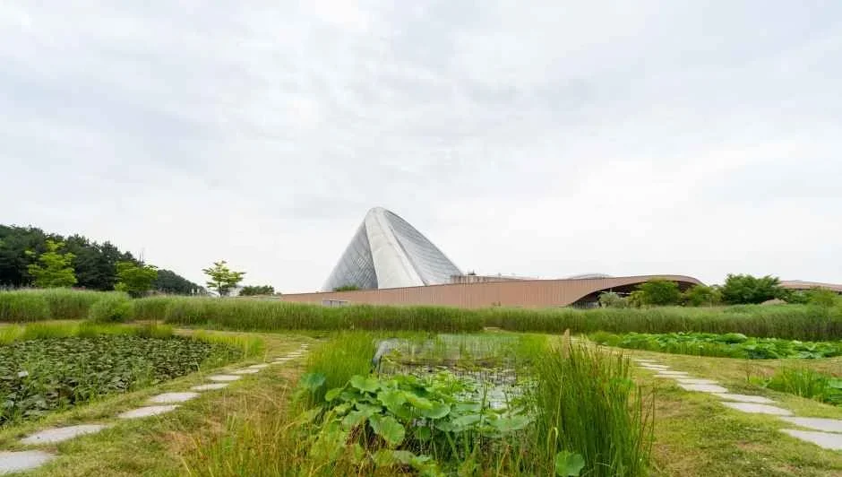
▲ 습지 정원 너머로 보이는 지붕 구조물. 사진 설명에 시설명은 없고 촬영 시기도 자료에 없다. ⓒ 한국관광공사 · 공공누리 제1유형
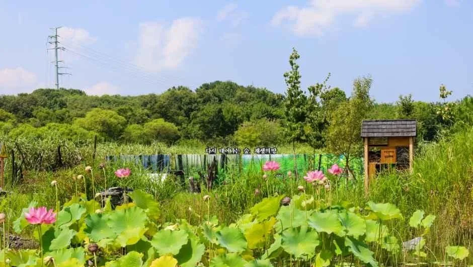
▲ 연잎이 가득한 못. 촬영 시기는 자료에 없으나 연잎이 무성해 겨울 풍경은 아니다. ⓒ 한국관광공사 · 공공누리 제1유형
▲ 하트 모양 은빛 조형물과 국립생태원 표지. 촬영 시기는 자료에 없다. ⓒ 한국관광공사 · 공공누리 제1유형
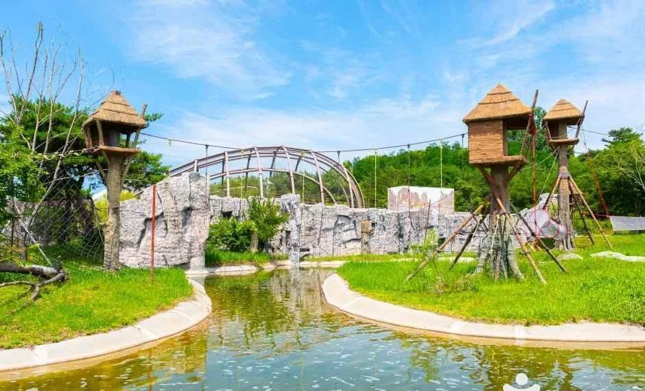
▲ 못 사이 길과 새집 모양 탑이 보이는 야외 구역. 구역명과 촬영 시기는 자료에 없고 초록 풍경이라 겨울은 아니다. ⓒ 한국관광공사 · 공공누리 제1유형
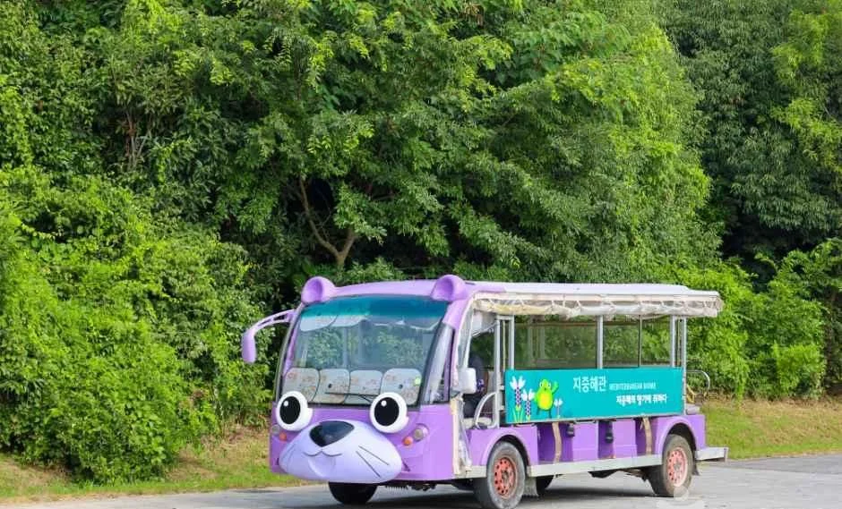
▲ 야외 도로에 서 있는 보라색 소형 차량. 운행 여부·요금은 공식 자료에서 확인하지 못했다. ⓒ 한국관광공사 · 공공누리 제1유형
6. 겨울에 가려면 — 기차·버스·자가용과 주차 1,000면
기차는 장항선 장항역에서 서문매표소까지 도보 5분 이내, 버스는 서천시외버스터미널·군산시외버스터미널에서 시내버스 72번, 자가용은 국도 21호선을 따라 정문으로 간다. 공식 오시는 길 페이지에는 주소(충남 서천군 마서면 금강로 1210)와 대표전화(041-950-5300)가 있다. 해당 페이지 제목은 서천역으로 적혀 있지만 본문은 장항역을 안내해, 내리는 역은 장항역으로 확인해 두는 편이 안전하다.
| 수단 | 안내 내용 |
|---|---|
| 자가용(서해안고속도로) | 서천IC → 국도 4호선(군산 방향) → 송내 사거리에서 국도 21호선 → 정문 |
| 자가용(서천공주고속도로) | 동서천IC → 국도 29호선(서천 방향) → 금강하구둑에서 우회전 → 국도 21호선 → 정문 |
| 기차 | 장항선 장항역 하차, 서문매표소까지 도보 5분 이내 |
| 버스 | 서천시외버스터미널에서 시내버스 72번 또는 택시. 군산시외버스터미널에서는 약 145m 걸어 팔마플라자 터미널 정류장에서 72번 |
| 주차 | 약 1,000면(소형 978면, 버스 22면). 제1주차장·제2주차장·버스주차장이 안내도에 표시됨. 주차 요금은 확인하지 못함 |
주차장 용량이 넉넉해 겨울 평일에는 자리 걱정이 적겠지만, 명절·연휴와 겹치는 날의 혼잡은 공식 자료가 없다. 연휴 직후 첫 평일이 휴관일이 될 수 있다는 점은 1장 표에서 확인했으니 연휴 뒤 방문이라면 날짜를 먼저 대조하자. 오시는 길·주차 바로가기
서천에서 하루를 채우려면 근처 명소와 묶을 수 있다. 신성리 갈대밭은 해당 기사에서 국립생태원에서 약 22km, 차로 25분 안팎으로 안내했고, 신성리 갈대밭 가이드에서 동선을 다뤘다. 계절 먹거리가 궁금하면 서천 홍원항 전어·꽃게 축제 기사를, 군산 쪽을 함께 볼 계획이라면 군산 근대문화거리·은파호수 주차 기사를 참고하자. 국립생태원과 겨울 철새 관찰을 연결하는 공식 안내는 확인하지 못했다.
아이·유모차·도시락 — 공식 안내로 확인되는 것
6세 이하 어린이는 보호자 없이 입장할 수 없고, 유모차는 에코리움 실내에서만 빌려 쓸 수 있다. 공식 관람 안내(2026-10-24 확인)의 편의시설 항목에는 휠체어 무료 대여(정문·서문 매표소, 에코리움 안내데스크), 유아휴게실(미디리움 2층, 에코리움 1층), 어린이 놀이공간 하다람놀이터가 올라 있다. 놀이터는 13세 이하만 이용할 수 있고 보호자가 아이를 지켜봐야 한다.
| 상황 | 공식 안내 | 카프리즘 판단 |
|---|---|---|
| 영유아 동반 | 유모차 무료 대여는 생후 36개월(12kg) 이하용, 에코리움 안내데스크, 실내에서만 이용(야외 불가) | 야외 구역을 걸을 계획이면 아기띠가 편할 수 있다 |
| 걷기 힘든 부모님 | 휠체어 무료 대여(정문·서문 매표소, 안내데스크). 서문매표소→에코리움 355m | 서문 쪽에서 에코리움만 보는 코스가 거리 부담이 가장 작다(서문 355m 기준 계산) |
| 식사·도시락 | 식당은 에코리움 2층, 도시락은 하다람쉼터·에코리움 옥상정원에서만. 음식물 쓰레기는 되가져가야 함 | 실내 관람 위주인 겨울에는 2층 식당이 현실적이다. 영업시간은 확인하지 못함 |
| 반려동물 | 안내견을 제외한 반려동물 반입 금지 | 반려견 동반 여행이면 일정에서 제외하거나 따로 맡길 곳을 정한다 |
| 반입 금지 품목 | 주류, 버너, 텐트, 그늘막, 공, 자전거·인라인·킥보드·전동자동차 등 소형 탑승기구 | 킥보드를 가져오면 입구에서 곤란할 수 있다 |
표의 '카프리즘 판단' 칸은 공식 안내를 바탕으로 한 해석이고, 현장 혼잡도나 식당 운영 상태는 공식 자료로 확인하지 못했다. 전시동물은 건강 상태 등으로 예고 없이 내실로 옮겨지거나 관람이 불가할 수 있다고 공식 안내가 밝히고 있어, 특정 동물을 보려고 가는 날에는 안내데스크(041-950-5902, 5911)에 먼저 물어보는 편이 안전하다.
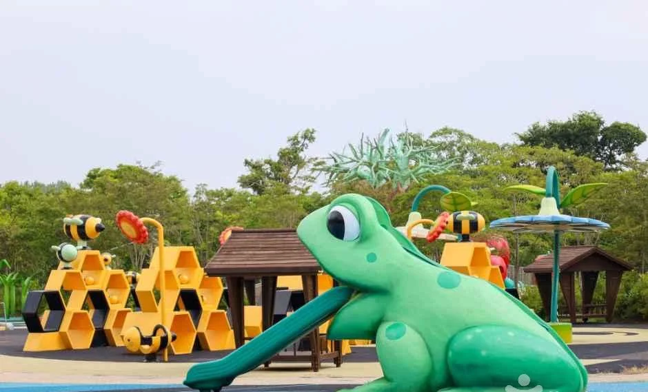
▲ 개구리 미끄럼틀과 벌집 모양 놀이기구가 있는 어린이 놀이 공간. 공식 하다람놀이터 구성 중 어느 곳인지는 사진 설명에 없다. ⓒ 한국관광공사 · 공공누리 제1유형
▲ 태블릿 화면에 뜬 '즐거운 생태탐구' 시작 화면. 이용 조건은 공식 자료에서 확인하지 못했다. ⓒ 한국관광공사 · 공공누리 제1유형
⚠️ 확인하지 못한 것
계절별 관람시간 변경(공식 페이지 표기 없음), 주차 요금, 사막관·지중해관의 겨울 온도(공식 표기가 엇갈림), 1일 관람 소요시간, 겨울 철새 관찰 정보는 공식 자료에서 확인하지 못했다. 휴관일 공지는 연초에 게시된 달력 이미지이므로 방문 전 041-950-5902, 5911 또는 공식 누리집에서 확인하자.
✅ 출발 전 체크
1) 휴관일은 월요일 외에 대체공휴일 다음 평일·설·추석 연휴(2026년은 8일)도 있다 2) 09:30~17:30, 매표는 16:30 마감 3) 서천군민·다자녀 50%, 그린카드 등 30%, 세금포인트 1,000원 할인은 증빙 지참 4) 극지관은 10℃ 이하 표기라 겉옷을 챙긴다 5) 주차는 약 1,000면이나 요금은 확인하지 못했다.
7. 정리
국립생태원은 09:30~17:30에 운영하고 매표는 16:30에 마감하며, 2026년 휴관일 54일 중 8일은 월요일이 아니다. 어른 입장료 5,000원은 서천군민·다자녀 가정이면 2,500원, 그린카드 등은 3,500원으로 내려간다. 에코리움에서 가장 넓은 열대관은 3,232㎡, 극지관은 10℃ 이하로 표기돼 겨울 방문에는 겉옷이 필요하다.
이 기사는 2026년 10월 24일 기준 국립생태원 공식 누리집과 한국관광공사 자료로 작성했다. 계절별 시간 변경, 주차 요금, 겨울 철새 관찰은 확인하지 못했으니 방문 전 전화로 확인하자.